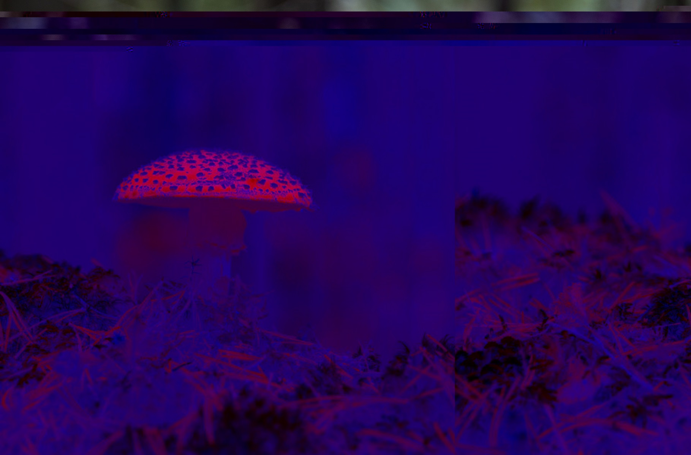

Name: Mushrooms
Medium: Audacity, Photoshop, Sublime (text manipulation), Photoshop
Dimension: 1819x1200
Mushrooms is a two-pieces series of glitch art created during ART74.
I create this two pieces Through the use of text- and audiowave-manipluation. The trippy and abstract nature of both images allude to psychedelic effect of Psilocybin (magic mushroom)
, or in general, the usage of drugs.